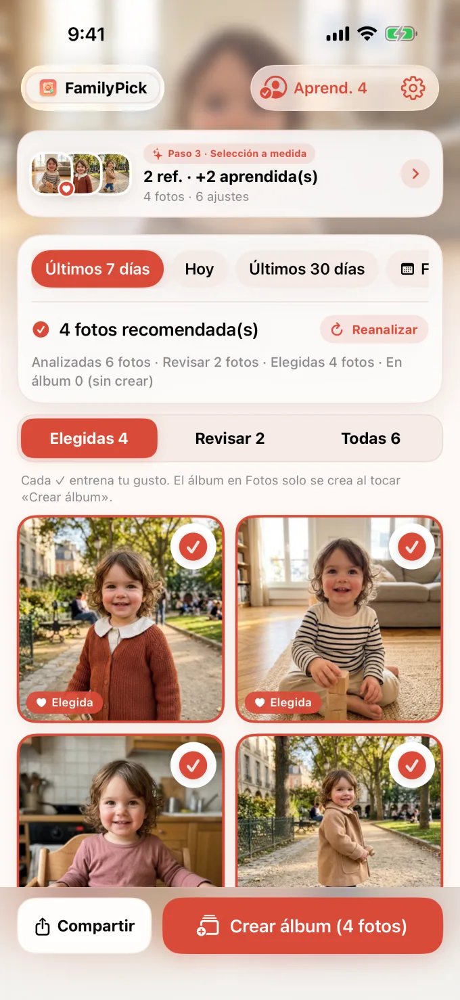
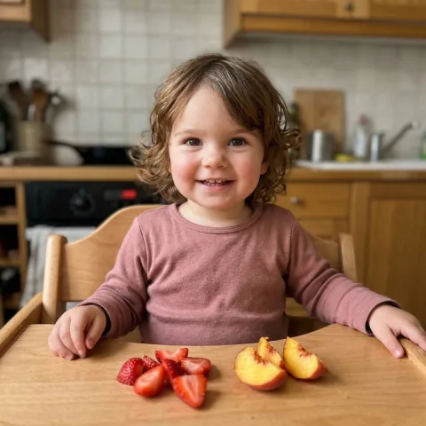
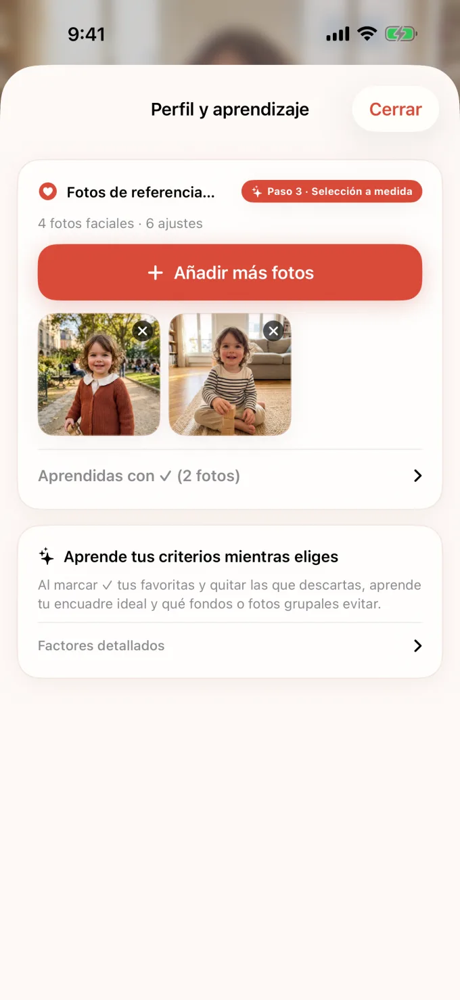
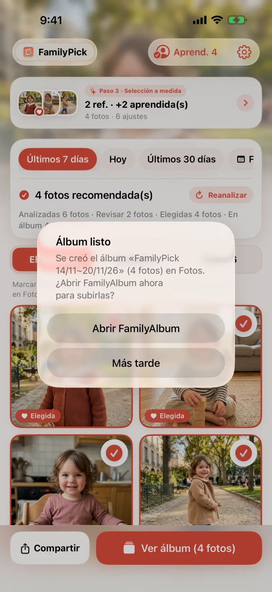
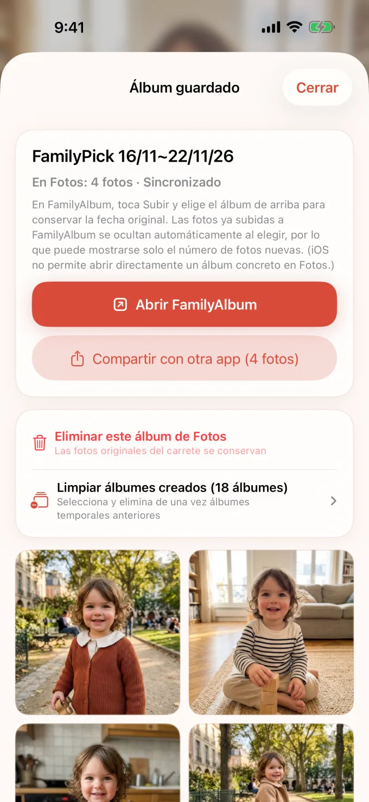

Aprende tu propia mirada
Las tomas movidas y fondos caóticos pasan a segundo plano, mientras cada ✓ enseña qué expresiones prefieres.
Antes de FamilyAlbum y el álbum familiar
Más allá de cientos de ráfagas y salones desordenados, FamilyPick reúne primero sus gestos más claros. Cada marca (✓) afina tu criterio familiar — y ni una sola foto sale jamás de tu iPhone.

Apple Vision en el iPhone Fechas EXIF intactas Gratis Sin cuenta



Sin ajustes complejos: solo una ayuda discreta que aprende qué recuerdos te gusta enseñar en casa.

Las tomas movidas y fondos caóticos pasan a segundo plano, mientras cada ✓ enseña qué expresiones prefieres.
Crea un álbum con fecha en Fotos de Apple solo cuando tú lo pides, conservando el 100 % de la fecha EXIF antes de abrir FamilyAlbum.
Tras compartir, borra los álbumes temporales sin tocar tus originales. Las fotos ya guardadas en un álbum no volverán a salir.
Elegir fechas, quedarse con sus gestos, abrir FamilyAlbum y despejar los álbumes temporales.
Los rostros nítidos aparecen primero
Con 1–2 fotos base y tus marcas ✓

Salto directo nada más crear el álbum

Quita álbumes temporales, cuida originales

El análisis con Apple Vision y el aprendizaje de tus preferencias funcionan exclusivamente dentro de tu dispositivo. Jamás se envía ninguna foto a servidores ni IA en la nube, sin cuentas ni rastreo.
Nunca. Todo el análisis fotográfico con Apple Vision y el aprendizaje de tu estilo ocurren al 100 % dentro de tu iPhone.
Sí. El álbum enlaza directamente tus fotos originales de Apple Fotos, manteniendo intacto el 100 % de la fecha y hora EXIF.
Tus fotos originales permanecen intactas en el carrete y las fotos ya incluidas en álbumes no se repiten. FamilyPick es gratuita en el App Store.
Reúne sus mejores gestos de la semana para compartirlos con quienes más le quieren.